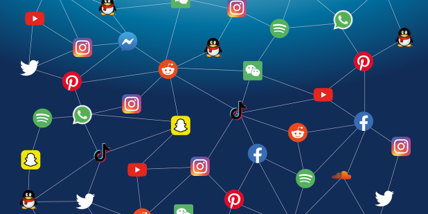

The first social network was born with the invention of the telephone. People could connect with each other remotely, share thoughts and ideas, and build relationships.
With the advent of letter writing, people could exchange thoughts, ideas, and stories through mail. This was the early days of online communication.
BBS allowed users to connect to a central server via a dial-up modem, sharing information, files, and messages.
The World Wide Web was born, making it possible for people to connect with each other globally. Email, chat rooms, and online forums emerged.
The first social media platform, Friendster, launched in 2002. It was followed by MySpace, Facebook, and Twitter.
Instagram, launched in 2010, revolutionized social media by introducing mobile-first design. It allowed users to share photos and videos, and quickly gained popularity.
TikTok, launched in 2016 as Douyin in China, emerged as a short-form video-sharing app that quickly gained popularity worldwide. It became known for its creative and entertaining content.
Today, we have a vast array of social media platforms catering to different interests, demographics, and purposes. From LinkedIn to TikTok, there's something for everyone.
